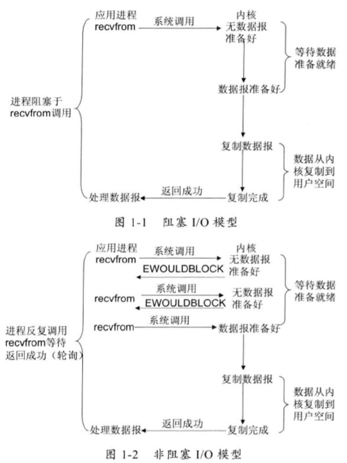
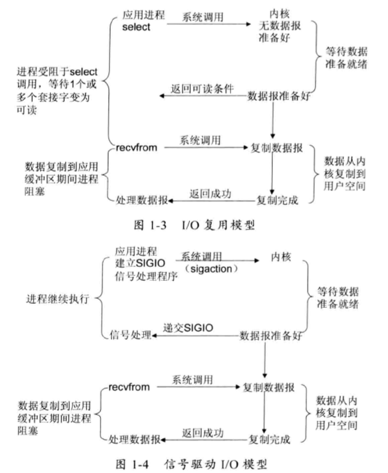

nio入门
linux网络I/O模型简介
linux的内核将所有外部设备都看作一个文件来操作，对一个文件的读写操作会调用内核提供的系统命令，返回一个file descriptor（fd，文件描述符）。而对一个socket的读写也会有相应的描述符，称为socketfd（socket描述符），描述符就是一个数字，它指向内核中的一个结构体（文件路径，数据区等一些属性）。
UNIX提供了5种I/O模型，分别如下。
- 阻塞I/O模型：再进程空间中调用recvfrom，其系统调用直到数据包到达切且被复制到应用进程的缓冲区中发生错误时才返回，在此期间一直会等待。
- 非阻塞I/O模型：recvfrom从应用层到内核的时候，如果该缓冲区没有数据的话，就直接返回一个EWOULDBLOCK错误，一般对非阻塞I/O模型进行轮询检查这个状态，看内核是不是有数据到来。

- I/O复用模型：Linux提供select/poll, 进程通过将一个或多个fd传递给select或poll系统调用，阻塞在select操作上，这样select/poll可以帮我们侦测多个fd是否处于就绪状态。select/poll是顺序扫描fd是否就绪，而且支持的fd数量有限，因此它的使用受到了一些制约。Linux 还提供了一个epoll 系统调用，epoll 使用基于事件驱动方式代替顺序扫描，因此性能更高。当有fd就绪时，立即回调函数rollback,如图1-3 所示。
- 信号驱动I/O模型：首先开启套接口信号驱动I/O功能,并通过系统调用sigaction执行一个信号处理函数(此系统调用立即返回，进程继续工作，它是非阻塞的)。当数据准备就绪时，就为该进程生成一个SIGIO信号，通过信号回调通知应用程序调用recvfrom来读取数据，并通知主循环函数处理数据，如图1-4所示。
- 异步I/O：告知内核启动某个操作，并让内核在整个操作完成后(包括将数据从内核复制到用户自己的缓冲区)通知我们。这种模型与信号驱动模型的主要区别是:信号驱动I/O由内核通知我们何时可以开始一个I/O操作;异步1/O模型由内核通知我们I/O操作何时已经完成，如图1-5所示。

I/O多路复用技术
I/O多路复用技术通过把多个I/O的阻塞复用到同一个select的阻塞上，从而使得系统在单线程的情况下可以同时处理多个客户端请求。与传统的多线程/多进程模型比，I/O多路复用的最大优势是系统开销小，系统不需要创建新的额外进程或者线程，也不需要维护这些进程和线程的运行，降低了系统的维护工作量，节省了系统资源。
支持I/O多路复用的系统调用：select（轮询）、 pselect、 poll、 epoll
epoll对select的改进：
- 支持一个进程打开的socket描述符( FD )不受限制(仅受限于操作系统的最大文件句柄数)。select默认最多为1024。
- I/O效率不会随着FD数目的增加而线性下降。因为select是轮询的需要线性扫描全部的集合，导致效率线性下降。epoll只对“活跃的”socket进行操作--因为在内核实现中，epoll是根据每个fd上面的callback函数实现的。
- 使用mmap加速内核与用户空间的消息传递。
- epoll的API更加简单。
BIO
传统的BIO编程：主要的问题在于每当有一个新的客户端请求介入时，服务端必须创建一个新的线程处理新接入的客户端链路，一个线程只能处理一个客户端连接。在高性能服务器应用领域，往往需要面向成千上万个客户端的并发连接，这种模型显然无法满足高性能、高并发接入 的场景。
伪异步I/O编程：为了改进一线程一连接模型，后来又演进处了一种通过线程池或者消息队列实现1个或者多个线程处理N个客户端的模型，由于它的底层通信机制依然使用同步阻塞I/O，所以被称为“伪异步”。
弊端分析：读和写都是同步阻塞的，阻塞的时间取决于对方I/O线程的处理速度和网络I/O的传输速度。本质上来讲，无法保证生产环境的网络状况和对端的应用程序能足够快，如果我们的应用程序依赖对方的处理速度，它的可靠性就非常差。也许在实验室进行的性能测试结果令人满意，但是一旦上线运行，面对恶劣的网络环境和良莠不齐的第三方系统，问题就会如火山一样喷发。
例如：当通信对方返回应答时间过长会引起的级联故障如下
- 服务端处理缓慢，返回应答消息耗费60s， 平时只需要10ms。
- 采用伪异步I/O的线程正在读取故障服务节点的响应，由于读取输入流是阻塞的，它将会被同步阻塞60s。
- 假如所有的可用线程都被故障服务器阻塞，那后续所有的I/O消息都将在队列中排队。
- 由于线程池采用阻塞队列实现，当队列积满之后，后续入队列的操作将被阻塞。
- 由于前端只有一个Accptor线程接收客户端接入，它被阻塞在线程池的同步阻塞队列之后，新的客户端请求消息将被拒绝，客户端会发生大量的连接超时。
- 由于几乎所有的连接都超时，调用者会认为系统已经崩溃，无法接收新的请求消息。
NIO编程
缓冲区Buffer：Buffer是一个对象，它包含一些要写入或者读出的数据。在NIO库中，所有数据都是用缓冲区处理的（区别于面向流的I/O中，可以将数据直接写入或者将数据直接读到Stream对象中）。缓冲区实质上是一个数组，并提供了对数据的结构化访问以及维护读写位置（limit）等信息。
通道Channel：像自来水管一样，网络数据通过Channel读取和写入。通道与流的不同之处在于通道是双向的，流只是在一个方向上移动，而通道可以用于读、写或者是二者同时进行。因为Channel是全双工的，所以它可以比流更好地映射底层操作系统的API。特别是在UNIX网络编程模型中，底层操作系统的通道都是全双工的，同时支持读写操作。
多路复用器Selector（NIO关键）：多路复用器提供选择已经就绪的任务的能力。简单来讲，Selector会不断地轮询注册在其上的Channel，如果某个Channel上面发生读或者写事件，这个channel就处于就绪状态，会被Selector轮询出来，然后通过SelectionKey可以获取就绪Channel的集合，进行后续的I/O操作。一个多路复用器Selector可以同时轮询多个Channel,由于JDK使用了epoll()代替传统的select 实现，所以它并没有最大连接句柄1024/2048 的限制。这也就意味着只需要一个线程负责Selector的轮询，就可以接入成千上万的客户端，这确实是个非常巨大的进步。
NIO编程的优点：
- 客户端发起的连接操作是异步的，可以通过在多路复用器注册OP__CONNECT等待后续结果，不需要像之前的客户端那样被同步阻塞。
- SocketChannel 的读写操作都是异步的，如果没有可读写的数据它不会同步等待, 直接返回，这样I/O通信线程就可以处理其他的链路，不需要同步等待这个链路可用。
- 线程模型的优化:由于JDK的Selector在Linux等主流操作系统上通过epoll实现，它没有连接句柄数的限制(只受限于操作系统的最大句柄数或者对单个进程的句柄限制)，这意味着一个Selector 线程可以同时处理成千上万个客户端连接，而且性能不会随着客户端的增加而线性下降。因此，它非常适合做高性能、高负载的网络服务器。
AIO编程
NIO 2.0 引入了新的异步通道的概念，并提供了异步文件通道和异步套接字通道的实现。异步通道提供以下两种方式获取获取操作结果。
- 通过java.util.concurrent.Future类来表示异步操作的结果;
- 在执行异步操作的时候传入一个java.nio.channels。
CompletionHandler接口的实现类作为操作完成的回调。
NIO2.0的异步套接字通道是真正的异步非阻塞I/O,对应于UNIX网络编程中的事件驱动I/O(AIO)。它不需要通过多路复用器(Selector)对注册的通道进行轮询操作即可实现异步读写，从而简化了NIO的编程模型。
示例代码
- 李林峰老师编写的netty权威指南（第二版）对应的源码，已经maven化
- 本代码主要是根据《Netty 权威指南》原书章节整理的部分代码。
- 学习netty时的一些demo，学习书籍netty权威指南，以及自己实现的基于netty的私有协议栈
参考资料
- 《Netty权威指南》by 李林锋